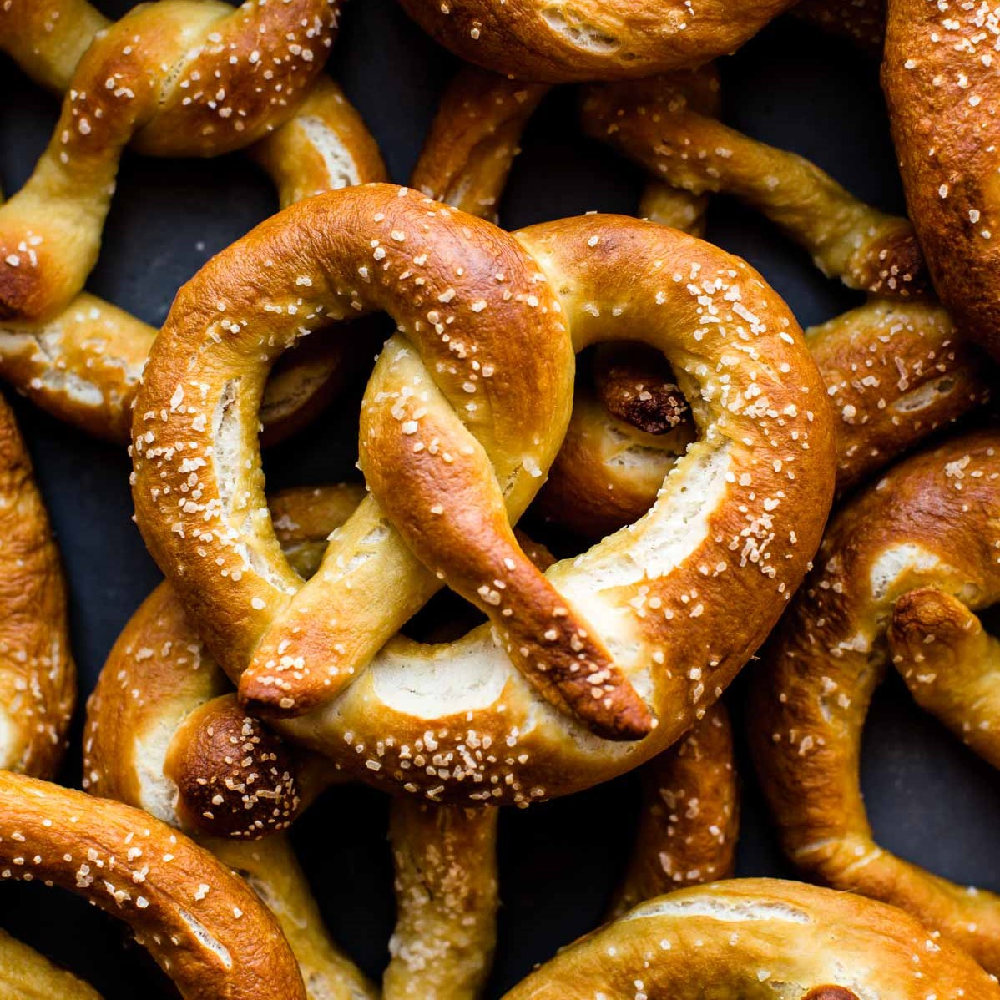
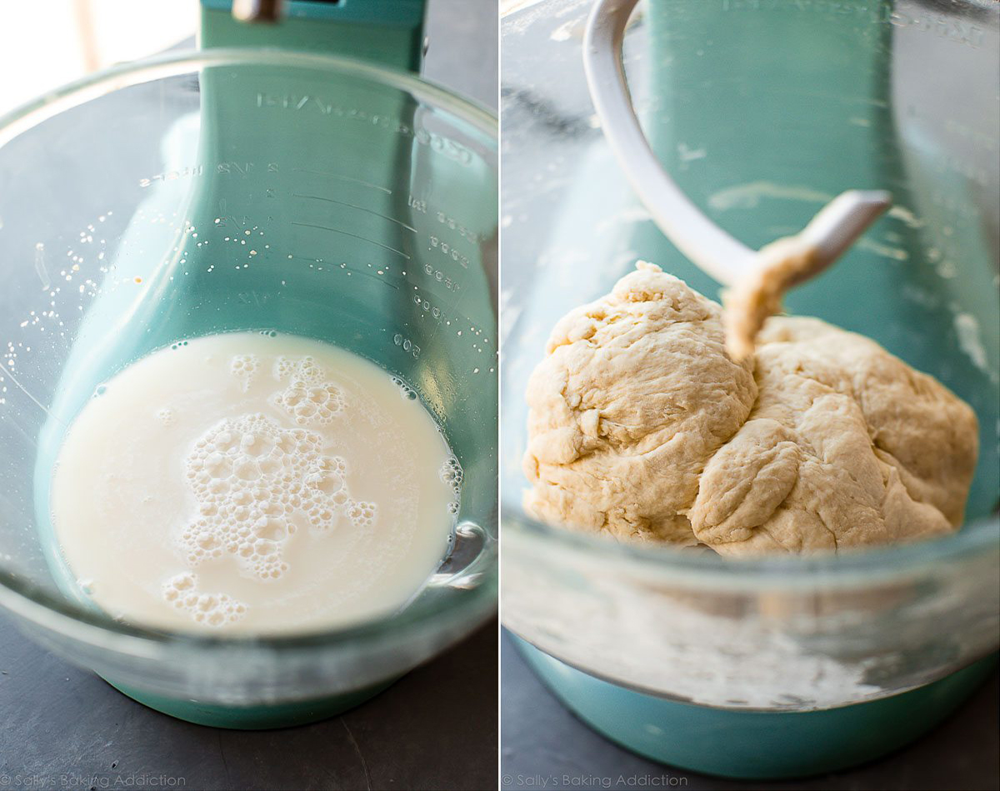
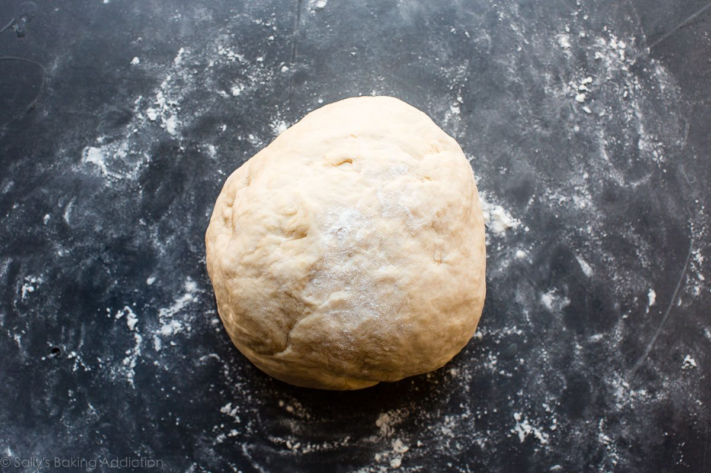
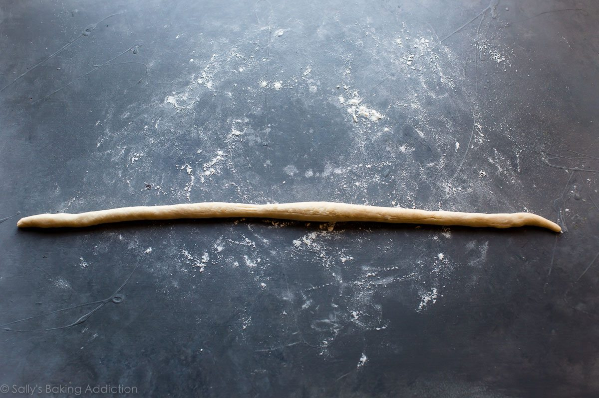
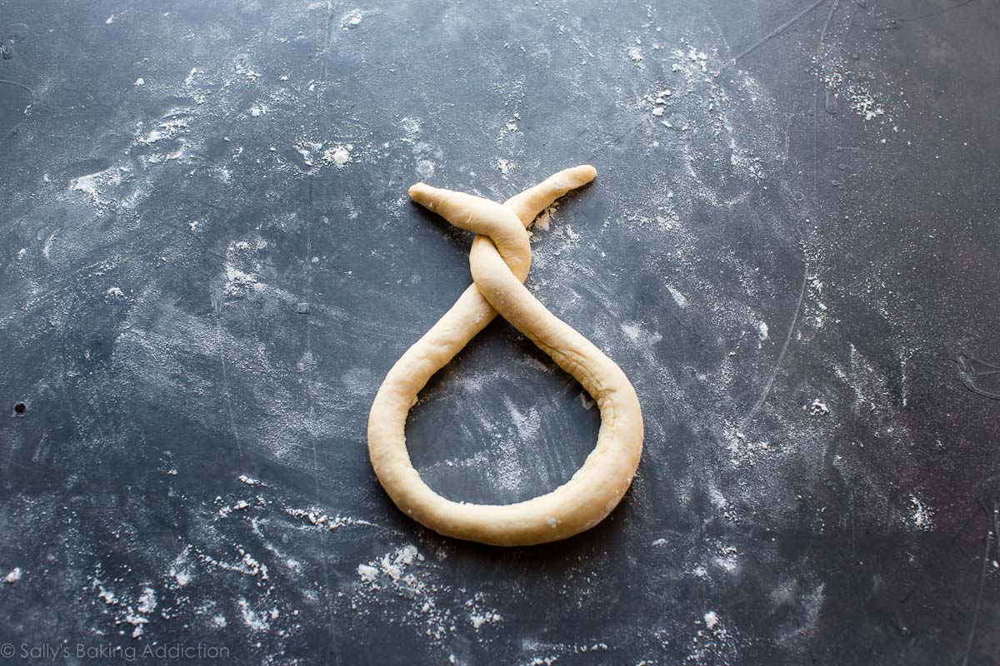
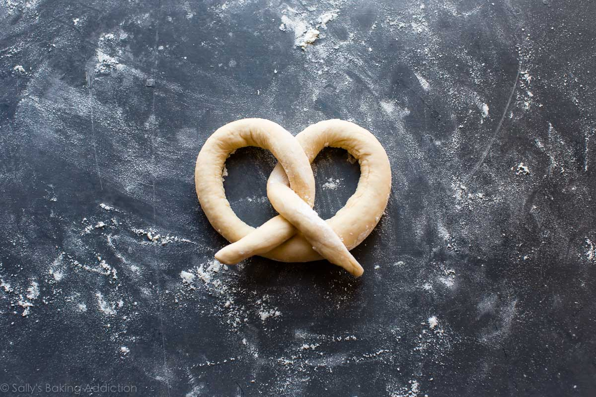
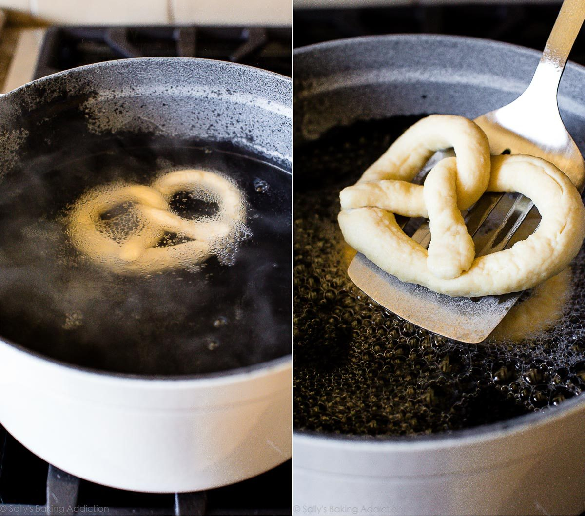
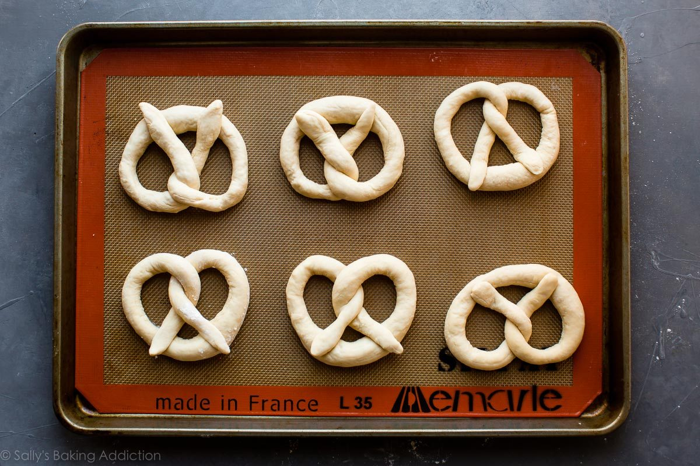
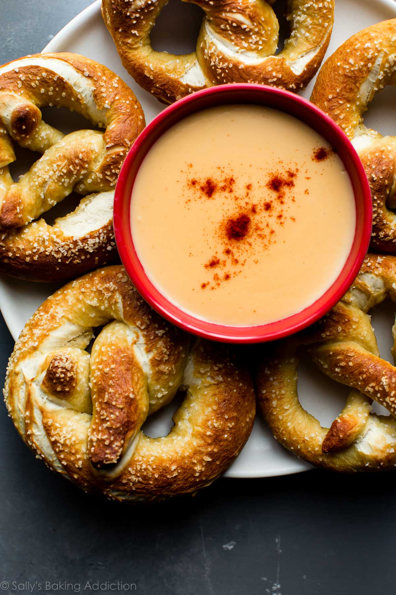

Recipe of Homemade
Pretzels

Easy Homemade Soft Pretzels
- Prep time:
- Cook time:
- Total time:
- Yield:
- 25 minutes
- 15 minutes
- 40 minutes
- 12 pretzels
Description
This is one of the easiest ways to prepare homemade soft pretzels and
the results are extra delicious! The dough is a family recipe and only
needs to rest for 10 minutes before shaping. The quick baking soda boil
gives the pretzels their traditional flavor.
Ingredients
-
1 and 1/2 cups (360ml) warm water (lukewarm – no need to take
temperature but around 100°F (38°C) is great)
-
2 and 1/4 teaspoons (7g) instant or active dry yeast (1 standard
packet)
- 1 teaspoon salt
- 1 tablespoon brown sugar or granulated sugar
- 1 tablespoon unsalted butter, melted and slightly cool
-
3 and 3/4-4 cups (469-500g) all-purpose flour (spoon & leveled),
plus more for hands and work surface
- coarse salt or coarse sea salt for sprinkling
Baking Soda Bath (See Recipe Note)
Instructions
-
Whisk the yeast into warm water. Allow to sit for 1 minute. Whisk in
salt, brown sugar, and melted butter. Slowly add 3 cups of flour, 1
cup at a time. Mix with a wooden spoon (or dough hook attached to
stand mixer) until dough is thick. Add 3/4 cup more flour until the
dough is no longer sticky. If it is still sticky, add 1/4 – 1/2 cup
more, as needed. Poke the dough with your finger – if it bounces back,
it is ready to knead.

-
Turn the dough out onto a floured surface. Knead the dough for 3
minutes and shape into a ball. Cover lightly with a towel and allow to
rest for 10 minutes. (Meanwhile, I like to get the water + baking soda
boiling as instructed in step 6.)
-
Preheat oven to 400°F (204°C). Line 2 baking sheets with parchment
paper or silicone baking mats. Silicone baking mats are highly
recommended over parchment paper. If using parchment paper, lightly
spray with nonstick spray or grease with butter. Set aside.
-
With a sharp knife or pizza cutter, cut dough into 1/3 cup sections.
-
Roll the dough into a 20-22 inch rope. Form a circle with the dough by
bringing the two ends together at the top of the circle. Twist the
ends together. Bring the twisted ends back down towards yourself and
press them down to form a pretzel shape.




-
Bring baking soda and 9 cups of water to a boil in a large pot. Drop
1-2 pretzels into the boiling water for 20-30 seconds. Any more than
that and your pretzels will have a metallic taste. Using a slotted
spatula, lift the pretzel out of the water and allow as much of the
excess water to drip off. Place pretzel onto prepared baking sheet.
Sprinkle each with coarse sea salt. Repeat with remaining pretzels. If
desired, you can cover and refrigerate the boiled/unbaked pretzels for
up to 24 hours before baking in step 7.

- Bake for 12-15 minutes or until golden brown.

- Remove from the oven and serve warm with cheese sauce.

-
Cover and store leftover pretzels at room temperature for up to 3
days. They lose a little softness over time. To reheat, microwave for
a few seconds or bake in a 350°F (177°C) for 5 minutes.
Recipe provided by
Sally